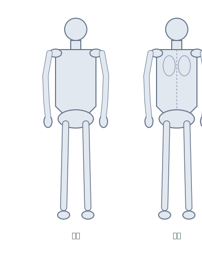

최근 환자
3김철수
작성중
박영희
완료
이민수
작성중
빠른 도구
환자 관리
김
김철수
M/65 · Stroke (Lt. hemiplegia)
등록: 2024.12.10
이
이영희
F/72 · Parkinson's disease
등록: 2024.12.09
박
박민수
M/45 · LBP (Disc herniation L4-5)
등록: 2024.12.08
최
최수진
F/58 · Rotator cuff tear (Rt.)
등록: 2024.12.05
정
정현우
M/32 · ACL reconstruction (Lt.)
등록: 2024.12.01
👤 환자 정보
세
🏥 주호소 (C.C)
💊 통증 평가 (VAS)
이미지를 탭하여 통증 부위에 마커를 추가하세요

통증 부위 0
이미지를 탭하여 마커 추가
수정 애쉬워스 척도 (Modified Ashworth Scale)
0정상 - 근긴장도 증가 없음
1ROM 끝에서 catch 또는 최소 저항
1+Catch 후 ROM ½ 미만에서 저항
2ROM 대부분 저항↑, 수동운동 가능
3현저한 긴장도↑, 수동운동 어려움
4강직(Rigid) - 굴곡/신전 고정
도수근력검사 (Manual Muscle Test)
0근수축 없음
T촉진 시 수축, 움직임 없음
P-중력제거 부분ROM
P중력제거 완전ROM
P+중력제거+약간저항
F-항중력 부분ROM
F항중력 완전ROM
F+항중력+약간저항
G-중등도저항 부분ROM
G중등도저항 완전ROM
G+중등도 이상 저항
N정상 - 최대저항 완전ROM
어깨 굴곡
정상범위: 0° - 180°
총점
0/56
(0/14 항목)
버그 균형 척도 (Berg Balance Scale)
14개 항목 · 각 0-4점 · 총 56점
0
불가
1
최소
2
감독
3
거의
4
독립
0-20 휠체어
21-40 보조
41-56 독립
근거 기반 검색
임상 가이드라인 및 중재법 검색